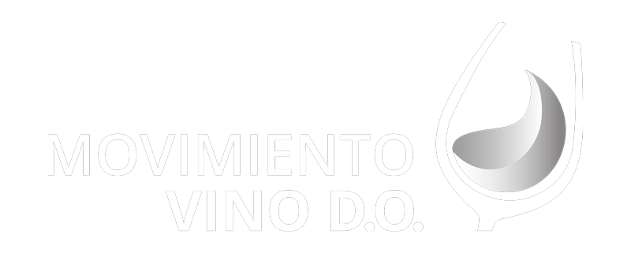

La primera edición de los Premios Fugaz nace de la mano de CortoEspaña para premiar lo más destacado del cortometraje español.
Divididos por categorías (cortometraje, dirección, guión, dirección de fotografía, dirección de producción, diseño de vestuario, montaje, actriz y actor), los Fugaz nacen para dar voz a los propios agentes de la industria del cortometraje. Por eso los encargados de decidir los galardones serán los integrantes de la Comisión CortoEspaña: un amplio grupo de profesionales del sector de diversas categorías, cuyos trabajos hayan tenido una reconocida trayectoria.
La primera edición de los Premios Fugaz se celebrará el 25 de mayo en Cineteca Madrid.
A los Premios Fugaz optarán los 28 cortometrajes que fueron escogidos, entre 921 presentados a concurso, para ser parte del Festival Itinerante CortoEspaña, por un comité de reconocidos profesionales del sector. Todos los cortometrajes tienen nacionalidad española y fueron producidos en el año 2016.
La Comisión CortoEspaña será la encargada de elegir a los nominados y ganadores de los Premios Fugaz. Esta Comisión estará compuesta por los miembros integrantes de los cortometrajes que fueron premiados en el Festival Itinerante CortoEspaña durante los años 2015 y 2016, además de algunos invitados de reconocido prestigio.
La Comisión busca constituir también un reconocimiento a los profesionales del sector del cortometraje más destacados. Nuestra intención es que, año tras año, la Comisión se vaya ampliando, formando una sólida base de agentes de la industria cuyos trabajos hayan sido ampliamente premiados.
Para la formación de la Comisión se han tenido en cuenta diversos aspectos que intervienen en la creación de un cortometraje, por eso directores, guionistas, directores de producción, directores de fotografía, diseñadores de vestuario, montadores, actores y actrices cuentan con representación dentro de la Comisión CortoEspaña.